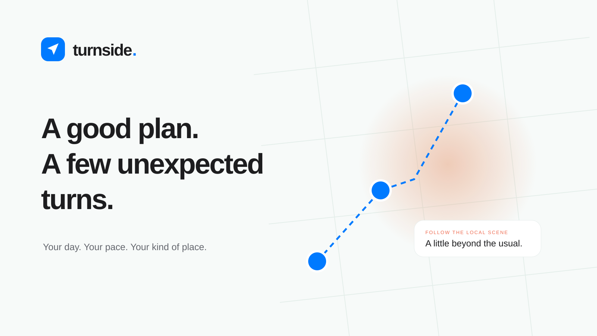

A good plan.
A few unexpected turns.
Turnside helps people find their way through a day, without planning away the possibility of a good detour. Clear, confident, and quietly playful.
Useful before cleverFamiliar by designProof behind every signalA name you can bring up in conversation.


Use “Turnside” in writing and “turnside.” in the wordmark. The directional symbol suggests a turn, a route, and a point of departure. Keep clear space equal to half the symbol width. Minimum symbol size: 24 px; wordmark: 112 px. Preserve the proportions and keep it away from noisy map details.
White space. A little color. A clear next step.
Blue guides action. Coral highlights discoveries. Mint and amber add warmth to area signals. Keep content surfaces white, use dark ink for primary reading, and reserve soft colors for backgrounds and decoration. Status must also have a label or icon.
Feels at home on your device.
Good coffee, independent places, and a little room to wander. Follow a plan that leaves you space to enjoy the day.
One family. Clear hierarchy.
Use the native system font: Apple system on Apple devices, Segoe UI on Windows, with a sans-serif fallback. Avoid decorative type in itineraries or map labels.
Display 34 · Headings 21 · Body 14 · Caption 11
Weights 400 / 550 / 600 / 650
Spacing grid 4 / 8 / 12 / 16 / 24 / 32 / 48
Familiar controls, with personality in the details.
Action & discovery
One clear primary action per decision. Rounded controls, restrained shadows, and subtle glass on map navigation.
Bookshop detour
Buttons 12 px radius · Cards 16–22 px · Modals 26 px. Lucide icons: 16, 20, or 24 px with consistent stroke weight. Interactive targets should reach 44 px where practical.
Signals people can inspect
Density colors describe the displayed measure. Never relabel a venue inventory as live crowds, popularity, or an endorsement. Provider marks identify a source or destination; they do not imply partnership.
Helpful, direct, a little inviting.
Say the next step.
“Make room in my day.”
“Running a little late?”
“Explore this area.”
Show what happened.
“Added to Day 1.”
“Later stops moved by 30 minutes.”
“Ready to continue · not booked.”
Keep the trust.
Show the source, retrieval time, and limits. Label mood photos and sample data. Use Gemini 3.8 for configured voice; make missing credentials clear.
Product photography should show real places when licensed, with a verifiable venue match. Prototype mood imagery must keep its label. Motion should orient: 180 ms controls, 250 ms cards, quiet hover states, and support for reduced motion.
Ready to use, ready to grow.


